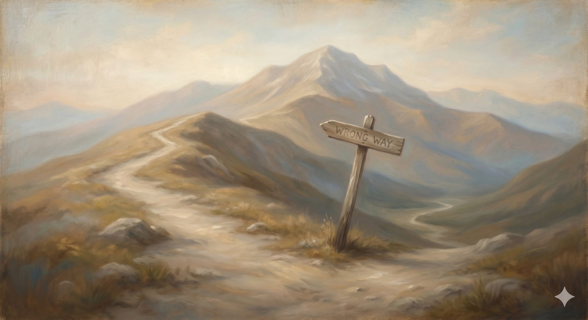

Arianism
Arianism — the peril that makes Jesus the greatest of creatures rather than true God; its genuine concern for monotheism, the one word that answered it, and where it walks today.
"...the Word was with God, and the Word was God." John 1:1 (ESV)
The first peril on the slope is the oldest and, in some ways, the most persistent — the one the whole armory downstairs was forged to answer. Up close it does not look like a cliff at all. It looks like reverence. It speaks warmly of Jesus, praises him as the highest and best of all beings, and only when you have followed it a few steps do you notice that the ground has fallen away beneath the single most important word the church ever fought over.
What it claimed"There was when he was not"
Arius of Alexandria was a popular, charismatic preacher in the early fourth century who spread his teaching partly through catchy songs — and his slogan was devastatingly simple to remember: there was when he was not. He taught that the Son of God had a beginning. Jesus was divine in an exalted sense, far above humanity, the greatest of all beings — but still a created being, brought into existence by the Father, subordinate to him and distinct from him in nature. The Father alone is truly God; the Son is his first and finest work.
The real question it was trying to answerA genuine concern for the oneness of God
Here is where the charity belongs, because Arius was guarding something real. His question was the right one: how can there be one God if both the Father and the Son are God? He was protecting monotheism — the relentless insistence of the Hebrew Scriptures that the Lord is one — and that instinct is not contemptible; it is biblical. The error is not in the question. It is in the answer, which resolves the tension the cheap way: by quietly demoting the Son out of the category of God and into the category of creature, however magnificent.
In plain terms
Arianism isn't a crude denial of Jesus. It's the move of making him the greatest thing God ever made rather than God himself. It sounds humble and reverent — which is exactly why it has lasted seventeen centuries.
Where it went wrongA creature cannot save
If Jesus is not fully God, the incarnation cannot accomplish what Scripture says it accomplishes. A creature cannot be the mediator between God and humanity in the way the New Testament describes — a go-between who is genuinely both sides of the relationship at once. And there is a second, sharper problem: worship offered to a created being, however exalted, is idolatry. The whole New Testament worships Jesus. If Arius is right, the whole New Testament is wrong to do so. The stakes could not be higher, which is why the church spent a century fighting over it rather than splitting the difference.
How the church respondedOne word: homoousios
The Council of Nicaea in 325 answered with a single Greek word the Arians could not bring themselves to sign: homoousios — "of the same substance" as the Father. Not similar substance; the same. That one word carried a world, and it is the keen edge of the Nicene sword hanging in the armory. The fight did not end at Nicaea — Arianism, backed by emperors, dominated large parts of the church for decades, and was only settled officially at Constantinople in 381, in no small part through the stubbornness of Athanasius against the world. But the line, once drawn, held.
The modern rebrandWhere it walks today
Old errors rarely die; they change clothes. The Jehovah's Witnesses teach explicitly that Jesus is the first and greatest of God's creations — identifying him with the archangel Michael — and even render John 1:1 as "the Word was a god." Arius would recognize the move instantly. Mormonism is not simply Arianism relabeled — its theology of eternal progression and embodied deity is genuinely its own thing — but it shares the decisive rejection: Jesus as a being distinct in kind from the Father, not "of the same substance." And then there is soft cultural Arianism, by far the most common: the warm, respectable view that "Jesus was the greatest teacher and moral example who ever lived." That is Arianism with the theology quietly removed — Jesus as the highest point on a human scale, rather than God himself genuinely stepping into our humanity.
The honest test: when a teaching talks about Jesus, does it keep his full divinity — or does it quietly slide him somewhere onto a spectrum between God and humanity?
That is the diagnostic to carry down the rest of the slope. Arianism diminishes the Son. The next peril takes aim in a different direction entirely — not at who Christ is, but at whether we needed him to do anything for us at all.